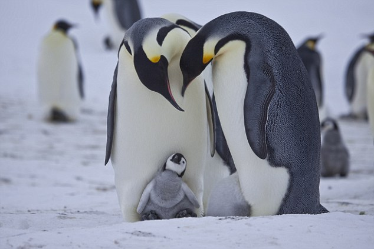
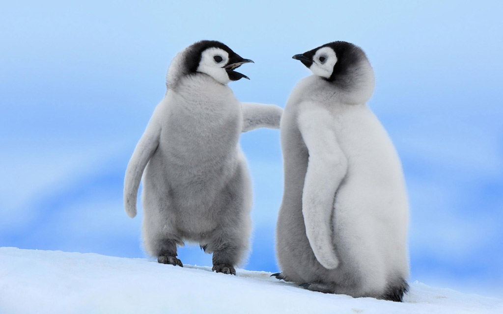
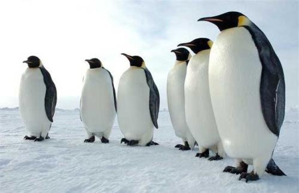
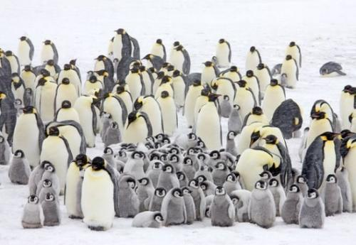

成年帝企鹅高达100-130厘米.-，重达20-45千克，是体型最大的企鹅。帝企鹅身披黑白分明的大礼服，喙赤橙色，脖子底下有一片橙黄色羽毛，向下逐渐变淡，耳朵后部最深，全身色泽协调。颈部为淡黄色，耳朵的羽毛为鲜黄桔色，腹部乳白色，背部及鳍状肢则是黑色，鸟喙的下方是鲜桔色。雄皇帝企鹅双腿和腹部下方之间有一块布满血管的紫色皮肤的育儿袋，能让蛋在环境温度低达零下40℃的低温中保持在舒适的36℃。小帝企鹅身上的浅灰白色绒羽可御寒防风，但不防水，防水的陵羽要等到它们快成年时才会长出，慢慢替换身上的绒羽，身体下方的绒羽会先掉。
从外观看-...，各种企鹅都很可爱，形态差不多。但事实上它们之间还是存在差异。帝企鹅与王企鹅常被混为一谈，它们实际是不同的两类。帝企鹅和王企鹅很相象，它们都身披黑白分明的大礼服，喙部赤橙色，脖子底下有一片橙黄色羽毛，向下逐渐变淡。不同之处在于，帝企鹅身材比王企鹅大，耳部是黄色的。
它们身体表面覆盖厚厚羽毛的部分比周围的空气温度要低，酷似穿了一件“冷外套”。红外热成像仪显示，企鹅身体表面平均比周围的温度要低4至6摄氏度。由于企鹅身体覆盖多层隔热的脂肪和羽毛，可以在外围空气温度低至零下40摄氏度的情况下，保持39摄氏度的体内温度。虽然南极的气温可以低至零下40摄氏度，但是生活在那里的帝企鹅的身体外表面甚至比周围的气温还低。唯一比周围空气温度高的身体部分是眼睛、嘴巴和脚掌，其中只有眼睛部分的温度在冰点之上。
南极是地球尽头，都是冰冻大陆，由于气候极端恶劣，只有最耐寒的动植物能在那儿生存，帝企鹅居住在横贯南极的山脉，罗斯海、罗斯冰棚的交接处，那里是饱受寒风摧残的科兹岬。秋天来临，大地覆盖上厚厚的冰雪，帝企鹅开始最特殊的生物行为——停止进食，它们浑圆的躯体，脚、鳍和头都是为储存热量而形成的。3月间，气温降到零下30摄氏度，帝企鹅也准备开始步行数百英里到冰地荒原漫长的旅行，因为交配季节即将开始。
生理
南极企鹅具有适应低温的特殊形态结构和特异生理功能。企鹅身被一层羽毛..，仔细看这一层羽毛可以分为内外两层，外层为细长的管状结构；内层为纤细的绒毛。它们都是良好的绝缘组织，对外能防止冷空气的侵入，对内能阻止热量的散失。绒毛层能吸收并贮存微弱的红外线的能量，作为维持体温、抗御风寒之用。企鹅经常站在寒冷的冰面和雪地上，而企鹅的脚不会冻住要完全归功于企鹅精巧的生理构造，企鹅腿部的动脉能够依照脚部温度调节血液流动，让脚部获得足够的血液，进而让脚部温度比冻结点高出几度。企鹅体内厚厚的脂肪层大约3-4厘米，特别是那些大腹便便的帝企鹅，脂肪更厚，脂肪层是企鹅活动、保持体温和抵抗寒冷的主要能源。企鹅怀卵和孵蛋时，不吃不喝，就是靠消耗自己的脂肪层来维持生命。帝雄企鹅孵蛋时，脂肪层消耗约90%。
集群
南极企鹅喜欢群栖，一群有几百只，几千只，上万只，最多者甚至达10～20多万只。在南极大陆的冰架上，或在南极周围海面的海冰和浮冰上，经常可以看到成群结队的企鹅聚集的盛况。有时，它们排着整齐的队伍，面朝一个方向齐步走，好像一支训练有素的仪仗队，在等待和欢迎远方来客；有时它们排成距离、间隔相等的方队，如同团体操表演的运动员，阵势十分整齐壮观。
帝企鹅是群居动物..-，无论是觅食和筑巢都聚集成群体。在恶劣天气里企鹅们挤在一起互相保护。全年大部分时间都活跃在筑巢区和海洋的觅食区之间。从1月到3月，帝企鹅扩散到海洋，旅游和觅食。据估计，至少有25万只帝企鹅，分布到多达40个独立的南极地区。
活动
帝企鹅的天敌主要敌害有豹海豹、虎鲸等。在南极的夏季，帝企鹅主要生活在海上，它们在水中捕食、游泳、嬉戏，一方面把身体锻炼得棒棒的，一方面吃饱喝足，养精蓄锐，迎接冬季繁殖季节的到来。在冬季里，帝企鹅每天都有外出“放风”的机会，它们会趁机活动活动筋骨。
游泳速度为每小时6-9公里，甚至可以实现高达每小时19公里的短距离飞速。要潜到约50米的海面下，在那里可以很容易地发现冰海中的鲜鱼，在海洋表面逆流而行。然后，再次潜水和浮出水面呼吸，重复上述步骤。他们还可以在冰的裂缝中吹泡，将隐藏的鱼逼出来。
在捕食区内，帝企鹅会反复潜入海底深处寻找食物。它们通常下潜到150-250米，有最深潜水达565米的记录。可以屏住呼吸在水下时为15-20分钟。帝企鹅通常以大海中的鱼虾和头足类动物为食。
觅食
在陆地上-..，帝企鹅或是靠双脚摇摇摆摆行走，或是用腹部紧贴冰面滑行，在南极的冬季来临之前，一般每年的4月至5月间，成年帝企鹅要在南极浮冰区走出50至120千米，搬至繁殖区生活。为了抵抗寒冷，帝企鹅群经常要缓慢前行。
帝企鹅主要以甲壳类动物为食，偶尔也捕食小鱼和乌贼。它是唯一一种在南极洲的冬季进行繁殖的企鹅。在野生环境，帝企鹅寿命一般在10年左右，个别寿命可达20年。
帝企鹅分布在南极大陆位于南纬66°-78.5°之间的许多地方，例如靠近威德尔海的科茨地和靠近罗斯湾的维多利亚地都有分布。
旅鸟：阿根廷、智利、马尔维纳斯群岛、赫德岛和麦克唐纳群岛、新西兰、南乔治亚岛和南桑威奇群岛。
帝企鹅主要生活于南极洲以及附近海洋中。通常在南极严寒的冬季繁殖后代，因为冬季敌害相对较少。奇特的是，雌企鹅只负责产蛋，雄企鹅才负责孵卵。孵卵期间，为了避寒和挡风，多只雄企鹅常常会并排而站，背朝来风面形成一堵挡风的墙。
帝企鹅为了保护小企鹅不遭受天敌——贼鸥的攻击，通常选择在南极严寒的冬季冰上繁殖后代，雌企鹅在5月份左右产蛋，帝企鹅每次只产1枚蛋。企鹅每年繁殖一次，雌企鹅产下蛋后，就暂时完成任务，雌企鹅在产卵过程中消耗了大量的体能，早已饥肠辘辘，于是把孵蛋的重任交给雄企鹅后，不顾一切地奔向海边去觅食。
帝企鹅的耐寒能力超强，在零下40度的条件下孵出小企鹅，不是一件容易的事，企鹅蛋不能直接放在地面或冰面上，否则就会把未出世的企鹅宝宝冻坏，于是雄企鹅双脚并拢，用嘴把蛋滚到脚背上，其目的就是不让蛋直接接触地面。然后，充分利用大腹便便的特点，用腹部的皱皮把蛋盖上，真如同一床羽绒被一样，给未来的小宝贝制造出一个温暖舒适的窝。成千上万孵蛋的雄企鹅为了抵挡南极的寒风，保持体温，通常背风而立，肩并肩地排列在一起，一动不动，不吃不喝，一心一意地孵蛋。大约60天之后，雌企鹅吃饱喝足，膘肥体壮，从远方海中回来，在成群结队的企鹅群中能准确地找到它的丈夫，这时候，企鹅宝宝才刚刚出世，雌企鹅从雄企鹅怀中接过企鹅宝宝，担当起养育后代的重任，用它在胃中储存的营养物质喂养企鹅宝宝。这时，骨瘦如柴、精疲力尽的雄企鹅卸下重担后，直奔远方的大海，去海中捕食美味的南极磷虾。
4月份，南极开始进入初冬，帝企鹅爬上岸来，开始寻找“安家立业”的宝地。到达繁殖地一个多月后，雌帝企鹅产下一枚淡绿色、重约500克的蛋，然后将蛋交给雄帝企鹅，就匆匆上路，返回食物丰富的海洋，以补养它们因生育而衰弱的身体。雄帝企鹅用嘴将蛋拨到足背上，然后放低它们温暖的腹部，把蛋盖住。从此，雄企鹅便弯着脖子，低着头，不吃不喝地站立60多天，承担起孵蛋的重任，靠消耗自身脂肪维持体能。
7月中旬到8月初的这段时间里，小帝企鹅们陆续地孵化出来。这时，雄帝企鹅才能稍微活动一下身子，然而雌帝企鹅还要在7-8个星期后才能回来，在她们返回前，小帝企鹅没有食物吃，如果小企鹅太饿，雄帝企鹅会反刍出一种白色的分泌物喂到小企鹅的嘴里，这种分泌物据说没什么营养，只是应付一下罢了。当雌帝企鹅返回时，它们将装在嗉囊里的食物带给小企鹅。这时，雄帝企鹅就可以返回海里去捕食和补养身体了。
初生企鹅的幼儿阶段，是在雄企鹅的脚背上和身边度过的，雄企鹅既是父亲又是保育员。初生的小企鹅浑身毛绒绒的，灰黄色，瞪着一对带内圈的小眼睛，走起路来，东歪西斜。由于父母双亲的精心抚养，小企鹅长得很快，不到一个月，就可以独立行走、游玩了。为了便于外出觅食和加强对后代的保护和教育，企鹅父母便把小企鹅委托给邻居照管。这样，由一只或几只成体帝企鹅照顾着一大群小企鹅的“幼儿园”就形成了。在幼儿园里，阿姨像照顾自己的子女一样，精心地照顾所有的孩子。小企鹅也乖乖地听阿姨的话，在那里过得很开心，等它们的父母回来，才把它们接回去。幼儿园的小企鹅偶尔也会遭受凶禽、猛兽的侵袭，此刻，阿姨们便会发出救急信号，招呼邻居，前来增援，对来犯之敌，群起而攻之。
尽管小企鹅在家庭和集体的精心抚养和照料下，不断成长、健壮，然而，由于南极恶劣环境的压力和天敌的侵害，小企鹅的存活率很低，仅占出生率的20-30%。
小企鹅出生3个月左右，南极的夏季来临了，它们跟随父母下海觅食、游泳。当南极的盛夏来临时，它们已长出丰满的羽毛。帝企鹅在真正成熟之前，它需要父母亲的精心抚养，还要学会独立行走、游泳、觅食等基本生存技能。14到16个月后，小企鹅才可完全成熟到独立程度。由于企鹅的交配季节都是固定的，因此当小企鹅长大成熟之时，正是海水中食物最为丰富的时节。